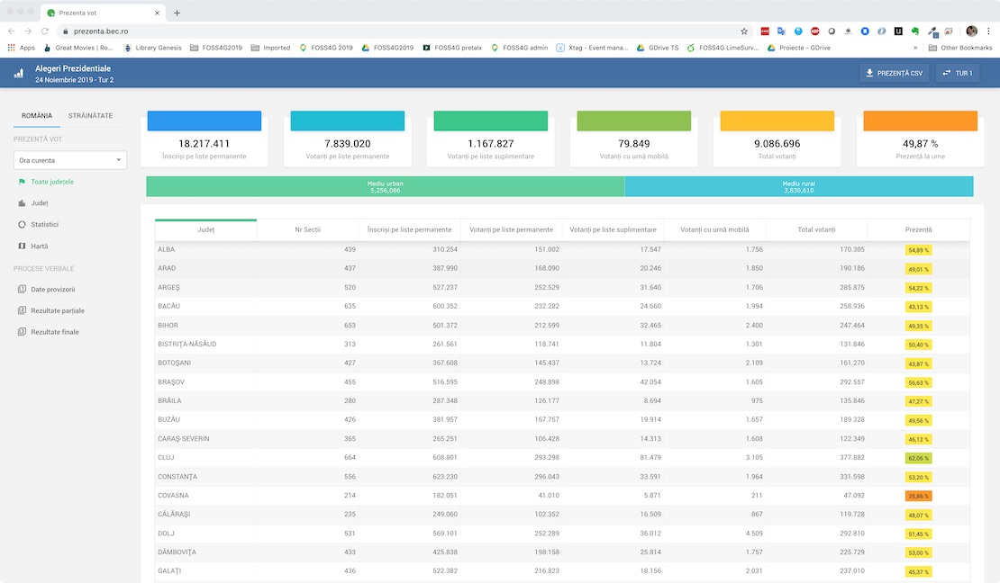
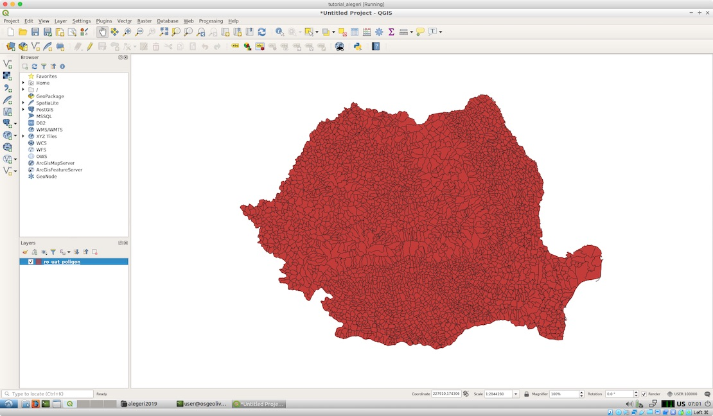
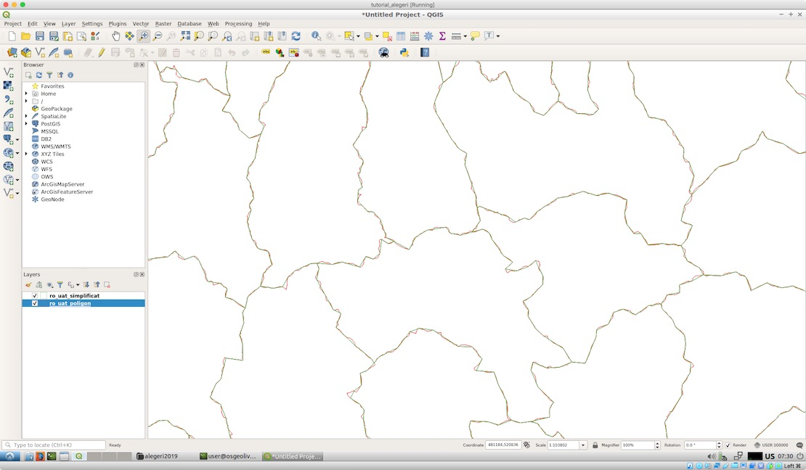
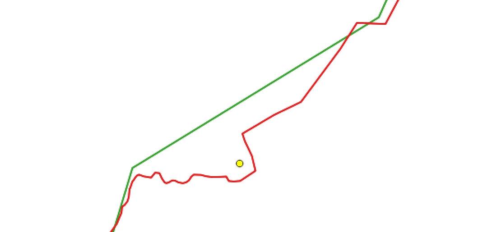

Cartografie electorală în linie de comandă - Partea 2: Datele de intrare
2.1. "Despre ce vorbim noi aici"?
Primul pas în reprezentarea cartografică a rezultatelor este, evident, accesarea rezultatelor votului și asocierea lor cu elementele ce ne permit spațializarea votului (ex: poziția secțiilor de votare, unitățile administrative, etc).
2.1.1. Procesele verbale de vot
În România, organizarea alegerilor cade în sarcina Autorității Electorale Permanente (AEP). Pe perioada scrutinurilor, AEP formează o serie de birouri electorale a căror activitate este coordonată și centralizată de către Biroul Electoral Central (BEC). Pe perioada alegerilor prezidențiale din 2019, BEC a operat o platformă electronică ce a centralizat în timp real prezența la vot. Tot aici, au fost publicate procesele verbale cu rezultatul voturilor la nivel de secție și unități teritorial administrative.
Platforma electronică BEC 2019
Datorită modului de funcționare a platformei, descărcarea proceselor verbale centralizate cu voturile pentru toată țara, la nivel de secție de votare, se poate face doar interactiv, de pe platforma BEC, neexistînd un link permanent de unde aceastea să poată fi descărcate automat. Aceasta este singura parte din tot tutorialul ce nu a putut fi automatizată și care necesită intervenția manuală a celui ce dorește să replice pașii tehnici. Așadar, de la adresa https://prezenta.bec.ro/prezidentiale10112019/romania-pv-final se descarcă, din secțiunea Fișiere pentru întreaga țară, fișierul pv_RO_PRSD_FINAL.csv și se mută în directorul nostru de lucru (/home/user/alegeri2019) cu numele pv_tur1.csv (implicit, Firefox va descărca fișierele în /home/user/Downloads). Similar se procedează și cu procesele verbale pentru turul doi. Se navighează la https://prezenta.bec.ro/prezidentiale24112019/romania-pv-final, se descarcă același fișier (va avea același nume cu cel din primul tur) și se mută în directorul de lucru cu numele pv_tur2.csv.
Inspectarea rapidă a conținutului fișierelor se poate face cu aplicația Leafpad, preinstalată pe mașina virtuală. Putem observa din imaginea de mai jos că fișierele conțin valori pentru cîmpurile: Cod birou electoral, Județ, Uat, Siruta, Localitate, Secție, Nr, Tip, Versiune, a, b, b1, b2, b3, c, d, e, f, g1, g2, g3, g4, g5, g6, g7, g8, g9, g10, g11, g12, g13, g14.
Conținutul fișierului cu procesele verbale centralizate
Conform legendei de pe platforma BEC, semnificația câmpurilor codate este după cum urmează:
a: Numărul total al alegătorilor prevăzut în lista electorală permanentă existentă în secția de votareb: Numărul total al alegătorilor care s-au prezentat la urneb1: Numărul total al alegătorilor care s-au prezentat la urne, înscriși în lista electorală permanentăb2: Numărul total al alegătorilor care s-au prezentat la urne și nu sunt cuprinși în lista electorală permanentă, înscriși în lista electorală suplimentarăb3: Numărul total al alegătorilor care au votat utilizând urna specială, înscriși în extrasul din listele electoralec: Numărul total al voturilor valabil exprimated: Numărul voturilor nulee: Numărul buletinelor de vot primitef: Numărul buletinelor de vot neîntrebuințate și anulateg1: KLAUS-WERNER IOHANNISg2: THEODOR PALEOLOGUg3: ILIE-DAN BARNAg4: HUNOR KELEMENg5: VASILICA-VIORICA DĂNCILĂg6: CĂTĂLIN-SORIN IVANg7: NINEL PEIAg8: SEBASTIAN-CONSTANTIN POPESCUg9: JOHN-ION BANUg10: MIRCEA DIACONUg11: BOGDAN-DRAGOS-AURELIU MARIAN-STANOEVICIg12: RAMONA-IOANA BRUYNSEELSg13: VIOREL CATARAMĂg14: ALEXANDRU CUMPĂNAȘU
Pe noi ne vor interesa cîmpurile cu voturile candidaților, de tip g[x]
2.1.2. Locațiile secțiilor de votare
AEP a publicat locațiile secțiilor de votare într-o aplicație web interactivă pe site-ul https://gis.registrulelectoral.ro:8443/DrumLaSectie/. Inspectînd modul de funcționare a aplicației, am descoperit că informațiile sînt dinamic servite prin intermediul unui serviciu WFS asigurat de o instanță GeoServer. Astfel, este suficient să facem o cerere WFS către acest server pentru a descărca local o copie a datelor. Facem respectiva cerere prin intermediul utilitarului Wget:
wget -O sectii.json --no-check-certificate "https://gis.registrulelectoral.ro:8443/CountApp/geoserver/aep/wfs?service=WFS&version=1.1.0&request=GetFeature&typename=aep:SectiiVotareRomania&outputFormat=application/json&srsname=EPSG:3857"
Rezultatul, în format GeoJSON, va fi stocat în directorul nostru de lucru cu numele sectii.json. Fișierul conține locațiile tuturor secțiilor din România și diaspora, așa cum se poate observa după încărcarea în QGIS (disponibil de asemenea pe mașina virtuală):
Locațiile secțiilor de votare din România și diaspora încărcate în QGIS
2.1.3. Limitele UAT-urilor
Limitele oficiale, și actualizări ale acestora, sînt publicate periodic de către ANCPI pe geoportalul INSPIRE, în aplicația de descărcare. geo-spatial.org preia aceste date, le îmbunătățește la nivel de atribut (ex: se adaugă informații statistice precum numărul de locuitori în diverși ani), și le publică ca fișiere statice și prin intermediul serviciilor de rețea standardizate. Vom prelua datele de pe geo-spatial.org deoarece o putem face automat, aplicația ANCPI fiind una interactivă, ce presupune selecția zonei de interes pe hartă și primirea datelor pe email. Pentru descărcarea datelor, vom folosi din nou aplicația Wget:
wget -O ro_uat_poligon.zip http://www.geo-spatial.org/file_download/29533
Deoarece datele descărcate sînt arhivate .zip, vom proceda la dezarhivarea lor:
unzip ro_uat_poligon.zip
Putem testa validitatea datelor încărcîndu-le în QGIS:
Limitele UAT încărcate în QGIS
2.2. Preprocesarea datelor și încărcarea într-o bază de date PostGIS
Acum, că avem toate datele necesare disponibile în directorul de lucru, putem să ne apucăm de treabă. Dar, pînă la prelucrarea lor pentru a obține doritele reprezentări cartografice, sînt necesare o serie de operații de preprocesare. În principal, aceste operații se vor face prin interogări SQL, într-o bază de date PostgreSQL + PostGIS. Așadar, este nevoie să importăm datele în baza de date.
2.2.1. Simplificarea geometriei stratului cu limitele UAT
Un singur pas îl vom face în afara ei, și anume, simplificarea geometriei stratului cu limitele UAT. PostGIS poate face și el această operațiune dar Mapshaper o face mai bine. Dar de ce avem nevoie să simplificăm geometriile? Well, deoarece stratul este destul de complex (peste 50 MB pe disc) iar noi ne dorim să aducem vectorul, fără complicații, într-o aplicație web. Iar cum, pentru scopul nostru, geometria detaliată și exactă nu este importantă, putem rula comanda de mai jos pentru a o simplifica, păstrînd relațiile de vecinătate dintre poligoane:
mapshaper -i ro_uat_poligon.shp -simplify 3% keep-shapes -o ro_uat_simplificat.shp
În QGIS, putem verifica rezultatul simplificării (verde) comparativ cu datele originale (roșu). Vizual, pentru scara la care ne interesează datele, diferențele nu's semnificative, dar, în termeni de dismensiune ocupată pe disc, versiunea simplificată este de 10 ori mai "ușoară".
Rezultatul simplificării stratului UAT
2.2.2. Crerea bazei de date PostGIS
Înainte de a importa datele în PostGIS, este necesar să ne facem un spațiu de lucru și la nivelul bazei de date. Vom face acest lucru prin crearea unei baze de date, numite alegeri, folosind comanda:
createdb alegeri
createdb funcționează în mașina virtuală OSGeoLive deoarece utilizatorul user este definit și la nivelul bazei de date PostgreSQL.
În continuare, vom adăuga extensia postgis la baza de date și vom crea o serie de sub-directoare (scheme) folosind utilitarul în linie de comandă psql pentru a trimite comenzile SQL către PostgreSQL:
psql -h localhost -p 5432 -U user -d alegeri -c "
CREATE EXTENSION postgis;
CREATE SCHEMA referinta;
CREATE SCHEMA sandbox;
CREATE SCHEMA tur1;
CREATE SCHEMA tur2;"
Mașina virtuală dispune și de un client grafic (pgAdmin III - versiunea curentă este 4.x dar mașina virtuală include o versiune anterioară) cu care putem verifica efectul comenzilor. Pentru a-l accesa mergem la Start/Geospatial/Databases/pgAdmin III. De aici, expandăm meniurile local/Databases/alegeri/Schemas și putem observa că schemele referinta, sandbox, tur1 și tur2 au fost create cu succes. Vom folosi schema referinta pentru a stoca datele inițiale, referinta pentru datele intermediare generice, tur1 și tur2 pentru cele intrmediare și finale ce au directă legătură cu cele două tururi.
Inspectarea rezultatelor comenzilor SQL folosind pgAdmin III
2.2.3. Importul datelor în PostGIS
Pentru importul datelor vom folosi GDAL/OGR:
ogr2ogr -f "PostgreSQL" PG:"host=localhost port=5432 dbname=alegeri user=user password=user" -lco SCHEMA=referinta -lco GEOMETRY_NAME=geom -lco SPATIAL_INDEX=yes ro_uat_simplificat.shp ro_uat_simplificat -nln uat_simplificat -nlt PROMOTE_TO_MULTI -s_srs EPSG:3844 -t_srs EPSG:3857 -skipfailures
ogr2ogr -f "PostgreSQL" PG:"host=localhost port=5432 dbname=alegeri user=user password=user" -lco SCHEMA=referinta -lco GEOMETRY_NAME=geom -lco SPATIAL_INDEX=yes sectii.json sectii -nln sectii -a_srs EPSG:3857 -skipfailures
ogr2ogr -f "PostgreSQL" PG:"host=localhost port=5432 dbname=alegeri user=user password=user" -lco SCHEMA=referinta pv_tur1.csv pv_tur1 -nln pv_tur1 -skipfailures
ogr2ogr -f "PostgreSQL" PG:"host=localhost port=5432 dbname=alegeri user=user password=user" -lco SCHEMA=referinta pv_tur2.csv pv_tur2 -nln pv_tur2 -skipfailures
Astfel, am creat în schema referinta tabelele uat_simplificat, sectii, pv_tur1 și pv_tur2. Rezultatele pot fi inspectate cu pgAdmin sau QGIS.
2.3. Diverse operațiuni pre-join
Pentru a transfera datele din procesele verbale la nivelul straturilor cu geometrie (secții, UAT-uri) sînt necesare cîteva operații de armonizare a informațiilor.
2.3.1. Eliminarea string-ului "JUDEȚUL" din tabela secții
Mai întîi vom modifica valorile din coloana judet din tabela sectii. După cum se poate observa mai jos, această coloană conține valori de tipul JUDEȚUL X:
Coloana judet din tabela sectii
Deoarece avem nevoie de această coloană într-un join viitor, join cu o tabelă unde numele de județe nu conțin și sintagma JUDEȚUL, redundantă oricum, vom înlocui acest cuvînt și vom lăsa doar numele de județe în respectiva coloană. De asemenea, pentru București vom renunța la particula MUNICIPIUL. Tot prin acest bloc de interogări vom înlocui Ş-urile și Ţ-urile cu sedilă cu varianta lor corectă, cu virgulă, Ș respectiv Ț:
psql -h localhost -p 5432 -U user -d alegeri -c "
UPDATE referinta.sectii SET judet = replace(judet, 'JUDEŢUL ', '');
UPDATE referinta.sectii SET judet = replace(judet, 'MUNICIPIUL ', '');
UPDATE referinta.sectii SET judet = replace(judet, 'Ş', 'Ș');
UPDATE referinta.sectii SET judet = replace(judet, 'Ţ', 'Ț');"
2.3.2. Eliminarea string-urilor "SECTOR X" din tabelele cu procesele verbale
O operație similară, dar din cu totul și cu totul alte motive, o vom aplica și tabelelor pv_tur1 și pv_tur2. Problema este că în tabela sectii nu avem informații cu privire la sector pentru secțiile din Municipiul București, toate aceste secții prezentînd valoarea MUNICIPIUL BUCUREŞTI. Am putea transfera atributul de secție pe baza suprapunerii cu stratul UAT. Însă, datorită simplificării de geometrie aplicate anterior, secțiile aflate în apropierea limitelor de sector ar putea fi greșit atribuite. Oricum, după cum veți vedea în pașii următori, detaliul cu privire la sector nu ne interesează acum. La reprezentarea la nivel de UAT vom repara problema. Acum pregătim datele pentru reprezentare la nivel de secție. Ca atare, vom altera coloana județ din cele două tabele, iar în loc de valorile de tip MUNICIPIUL BUCUREŞTI - SECTOR X vom introduce BUCUREŞTI. Similar acțiunii anterioare, vom corecta Ş-urile și Ţ-urile cu sedilă:
psql -h localhost -p 5432 -U user -d alegeri -c "
UPDATE referinta.pv_tur1 SET județ = replace(județ, 'MUNICIPIUL BUCUREŞTI - SECTOR 1', 'BUCUREŞTI');
UPDATE referinta.pv_tur1 SET județ = replace(județ, 'MUNICIPIUL BUCUREŞTI - SECTOR 2', 'BUCUREŞTI');
UPDATE referinta.pv_tur1 SET județ = replace(județ, 'MUNICIPIUL BUCUREŞTI - SECTOR 3', 'BUCUREŞTI');
UPDATE referinta.pv_tur1 SET județ = replace(județ, 'MUNICIPIUL BUCUREŞTI - SECTOR 4', 'BUCUREŞTI');
UPDATE referinta.pv_tur1 SET județ = replace(județ, 'MUNICIPIUL BUCUREŞTI - SECTOR 5', 'BUCUREŞTI');
UPDATE referinta.pv_tur1 SET județ = replace(județ, 'MUNICIPIUL BUCUREŞTI - SECTOR 6', 'BUCUREŞTI');
UPDATE referinta.pv_tur1 SET județ = replace(județ, 'Ş', 'Ș');
UPDATE referinta.pv_tur1 SET județ = replace(județ, 'Ţ', 'Ț');
UPDATE referinta.pv_tur2 SET județ = replace(județ, 'MUNICIPIUL BUCUREŞTI - SECTOR 1', 'BUCUREŞTI');
UPDATE referinta.pv_tur2 SET județ = replace(județ, 'MUNICIPIUL BUCUREŞTI - SECTOR 2', 'BUCUREŞTI');
UPDATE referinta.pv_tur2 SET județ = replace(județ, 'MUNICIPIUL BUCUREŞTI - SECTOR 3', 'BUCUREŞTI');
UPDATE referinta.pv_tur2 SET județ = replace(județ, 'MUNICIPIUL BUCUREŞTI - SECTOR 4', 'BUCUREŞTI');
UPDATE referinta.pv_tur2 SET județ = replace(județ, 'MUNICIPIUL BUCUREŞTI - SECTOR 5', 'BUCUREŞTI');
UPDATE referinta.pv_tur2 SET județ = replace(județ, 'MUNICIPIUL BUCUREŞTI - SECTOR 6', 'BUCUREŞTI');
UPDATE referinta.pv_tur2 SET județ = replace(județ, 'Ş', 'Ș');
UPDATE referinta.pv_tur2 SET județ = replace(județ, 'Ţ', 'Ț');"
2.3.3. Corectarea codului SIRUTA pentru localitatea Băneasa în procesele verbale
Inspectînd procesele verbale, am observat că localitatea Băneasa din Județul Constanța are atribuit un cod SIRUTA greșit (63171 în loc de 61069). Îl corectăm cu:
psql -h localhost -p 5432 -U user -d alegeri -c "
UPDATE referinta.pv_tur1 SET siruta = REPLACE(siruta, '63171', '61069') WHERE siruta = '63171';
UPDATE referinta.pv_tur2 SET siruta = REPLACE(siruta, '63171', '61069') WHERE siruta = '63171';"
2.3.4. Dizolvarea geometriilor sectoarelor Municipiului București
În continuare, vom crea o nouă versiune a tabelei uat_simplificat, una în care gemetriile celor 6 sectoare din București se vor contopi în una singură în care voloarea codului SIRUTA va fi 179132, pentru a se potrivi cu valoarea din tabela sectii. Pentru acesta, inițial, vom altera valorile coloanei natcode (cîmpul SIRUTA din tabela uat_simplificat), schimbînd codurile aferente sectoarelor cu codul 179132. Apoi, vom crea o tabelă nou, intitulată uat, în care poligoanele cu acest cod vor fi dizolvate pentru a forma o singură geometrie:
psql -h localhost -p 5432 -U user -d alegeri -c "
UPDATE referinta.uat_simplificat SET natcode = replace(natcode, '179141', '179132') WHERE natcode = '179141';
UPDATE referinta.uat_simplificat SET natcode = replace(natcode, '179150', '179132') WHERE natcode = '179150';
UPDATE referinta.uat_simplificat SET natcode = replace(natcode, '179169', '179132') WHERE natcode = '179169';
UPDATE referinta.uat_simplificat SET natcode = replace(natcode, '179178', '179132') WHERE natcode = '179178';
UPDATE referinta.uat_simplificat SET natcode = replace(natcode, '179187', '179132') WHERE natcode = '179187';
UPDATE referinta.uat_simplificat SET natcode = replace(natcode, '179196', '179132') WHERE natcode = '179196';
CREATE TABLE referinta.uat AS(
SELECT geom, natcode FROM referinta.uat_simplificat WHERE natcode <> '179132'
UNION
SELECT ST_Union(geom), natcode FROM referinta.uat_simplificat WHERE natcode = '179132' GROUP BY natcode
);"
Găsiți în imaginea de mai jos o comparație între stratul original (tabela uat_simplificat) și stratul rezultat (tabela uat):
Comparație între tabela uat_simplificat și noua tabelă uat.
2.3.5. Corectarea pozițiilor secțiilor afectate de simplificarea UAT-urilor
Cu ocazia simplificării limitelor UAT, cîteva secții aflate la aproape de limita UAT au fost trecute în UAT-ul vecin. A se vedea exemplul din imaginea de mai jos:
Exemplu de secție trecută într-un alt UAT după simplificarea limitelor
Reparăm problemele prin mutarea punctelor în cauză în interiorul UAT-ului corect:
psql -h localhost -p 5432 -U user -d alegeri -c "
UPDATE referinta.sectii set geom=ST_SetSRID(ST_MakePoint(2956473, 5828325), 3857) where gid = 1727;
UPDATE referinta.sectii set geom=ST_SetSRID(ST_MakePoint(2815232, 5725726), 3857) where gid = 3841;
UPDATE referinta.sectii set geom=ST_SetSRID(ST_MakePoint(2872752, 5885823), 3857) where gid = 8666;
UPDATE referinta.sectii set geom=ST_SetSRID(ST_MakePoint(2872969, 5885486), 3857) where gid = 8667;
UPDATE referinta.sectii set geom=ST_SetSRID(ST_MakePoint(2873109, 5885614), 3857) where gid = 8665;
UPDATE referinta.sectii set geom=ST_SetSRID(ST_MakePoint(2998782, 6004244), 3857) where gid = 9979;
UPDATE referinta.sectii set geom=ST_SetSRID(ST_MakePoint(2577136, 5604177), 3857) where gid = 8478;
UPDATE referinta.sectii set geom=ST_SetSRID(ST_MakePoint(2694131, 5632826), 3857) where gid = 16796;
UPDATE referinta.sectii set geom=ST_SetSRID(ST_MakePoint(2691447, 5617885), 3857) where gid = 16793;
UPDATE referinta.sectii set geom=ST_SetSRID(ST_MakePoint(2692424, 5449821), 3857) where gid = 7284;
UPDATE referinta.sectii set geom=ST_SetSRID(ST_MakePoint(2749550, 5438800), 3857) where gid = 15205;
UPDATE referinta.sectii set geom=ST_SetSRID(ST_MakePoint(2895340, 5606567), 3857) where gid = 12959;
UPDATE referinta.sectii set geom=ST_SetSRID(ST_MakePoint(2667673, 5574127), 3857) where gid = 16906;
UPDATE referinta.sectii set geom=ST_SetSRID(ST_MakePoint(2647556, 5510923), 3857) where gid = 7149;
UPDATE referinta.sectii set geom=ST_SetSRID(ST_MakePoint(2758591, 5675116), 3857) where gid = 1284;"
Acestea fiind făcute, putem trece mai departe la realizarea datelor pentru hărțile tematice.